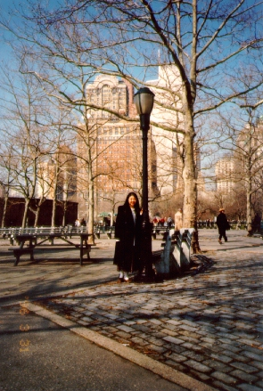

エリス島 (96.3)
移民博物館の近くで

| 自由の女神へ行く途中にある小さな島、エリス島です。ここは移民の島として知られていて、現在のアメリカ国民のおよそ４０％にあたる人たちの祖先は、このエリス島から入国したそうです。 |

=エリス島(96.3)=
|
私も中へ入りましたが、日本人の子どもたちの写真などもあって感銘深いものでした。 けどこの写真、海も見えないし、博物館も写ってませんね(^^;、、、すみませんm(_ _)m |
[ホームへ] [写真一覧へ]
| 自由の女神へ行く途中にある小さな島、エリス島です。ここは移民の島として知られていて、現在のアメリカ国民のおよそ４０％にあたる人たちの祖先は、このエリス島から入国したそうです。 |
|
私も中へ入りましたが、日本人の子どもたちの写真などもあって感銘深いものでした。 けどこの写真、海も見えないし、博物館も写ってませんね(^^;、、、すみませんm(_ _)m |